Shopify Stores
Store pages, PDPs and mobile paths built to make buying obvious.
This section is for the ecommerce implementation proof: layout, merchandising, product education and the small buying-path decisions that make a store feel easier to trust.

Shopify Proof
Stores designed to feel clearer, sharper and easier to buy from.
01
Before & After
A quick transformation pair to show how the store direction changed.
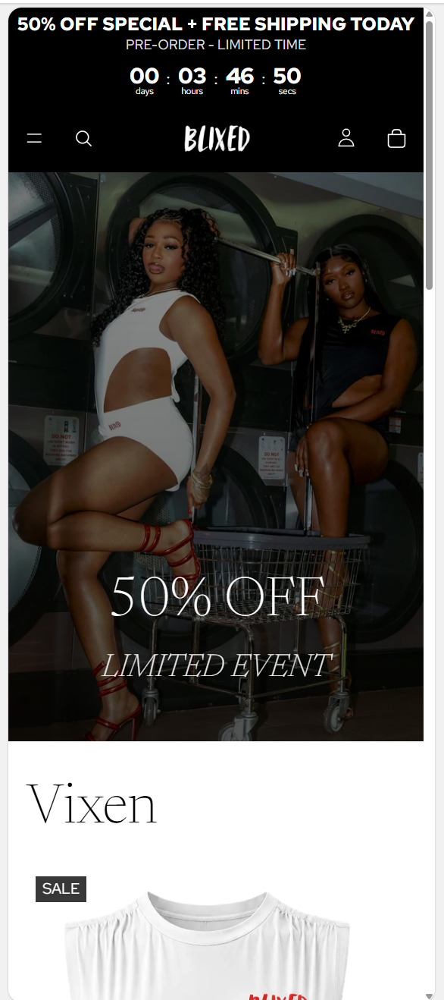
02
Store Screens
Mobile-first store, product and merchandising screens across different page states.

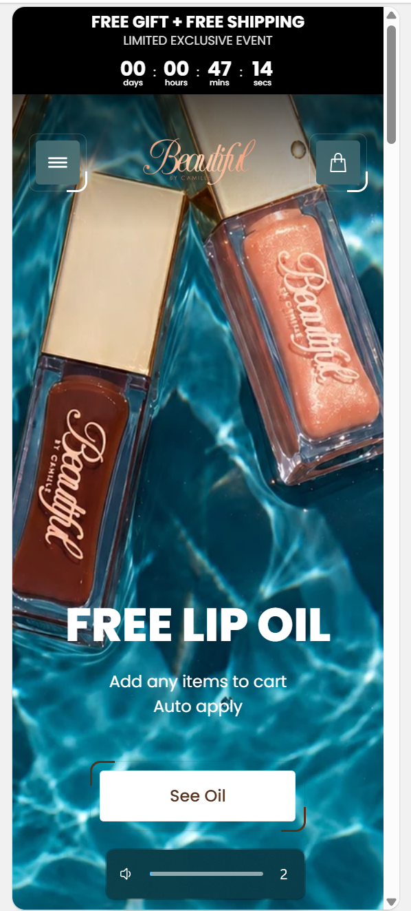
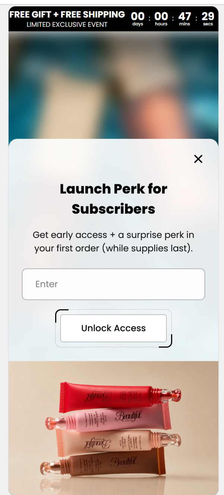
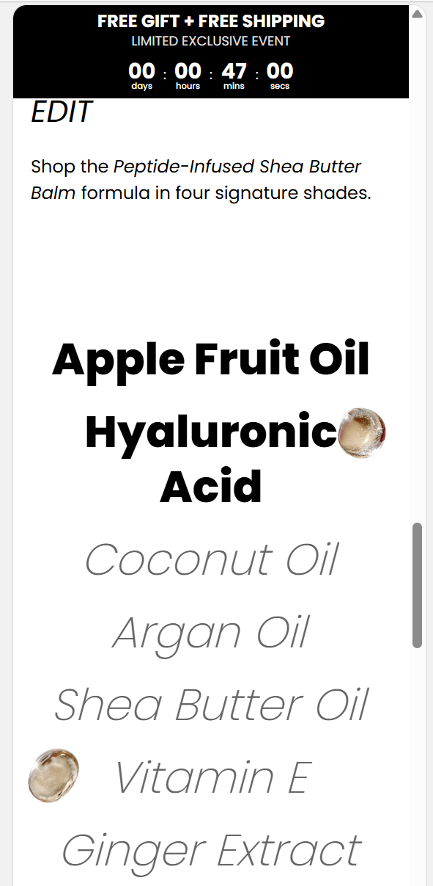
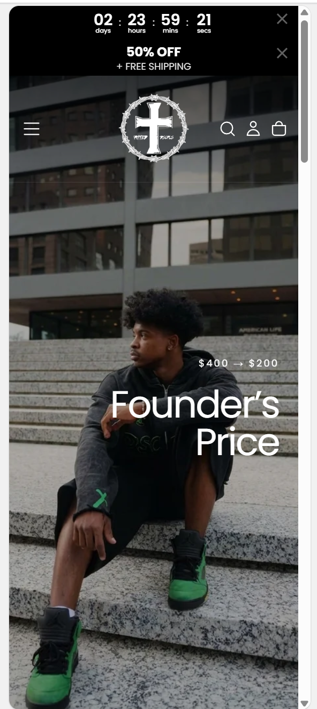
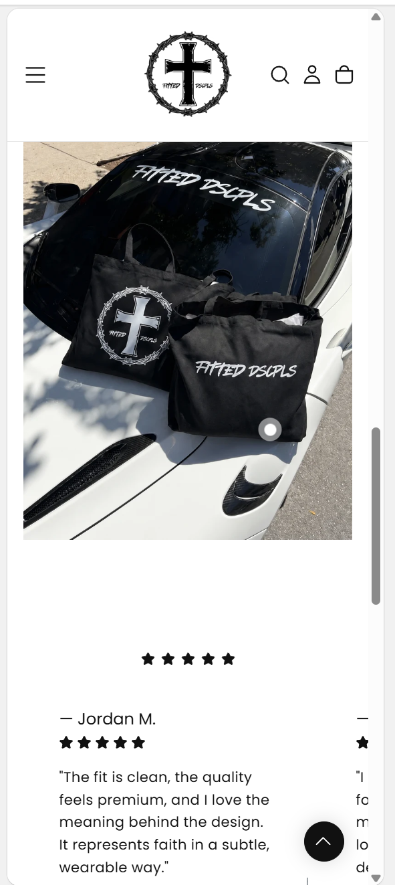
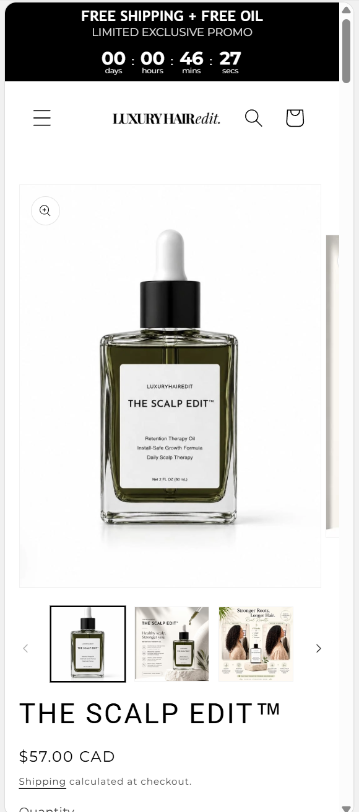
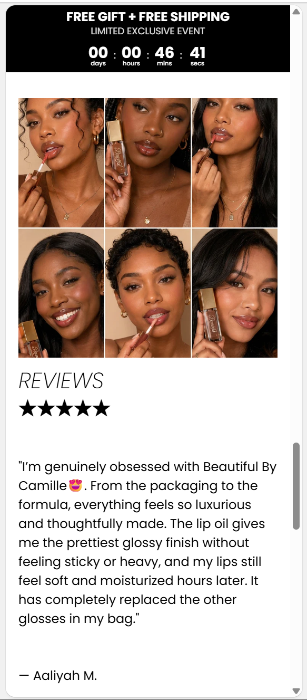
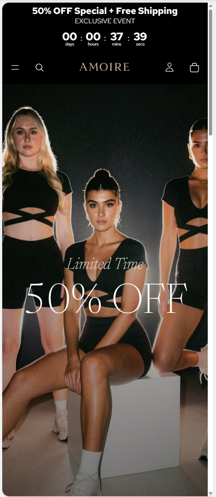
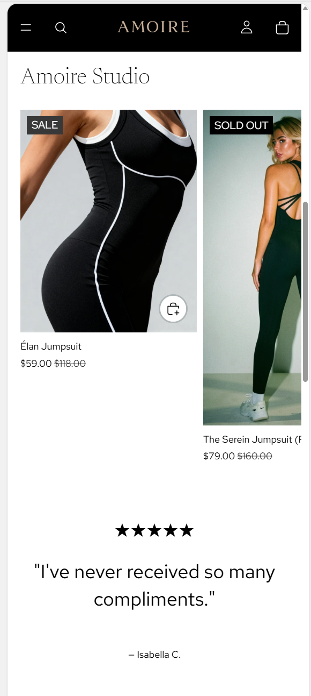
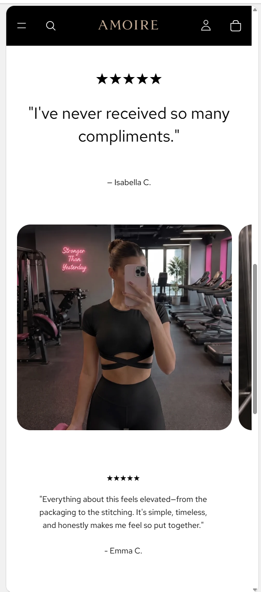
03
UGC & Comments
Buyer-facing content and feedback screens that support trust and purchase confidence.
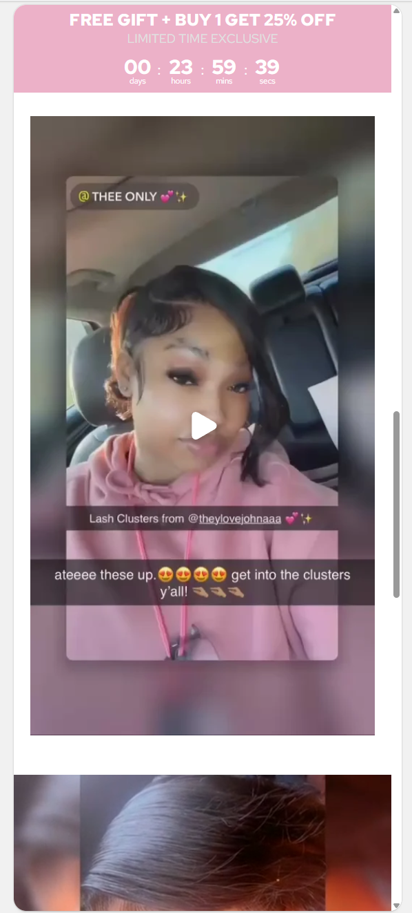
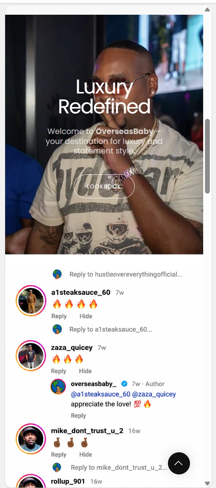
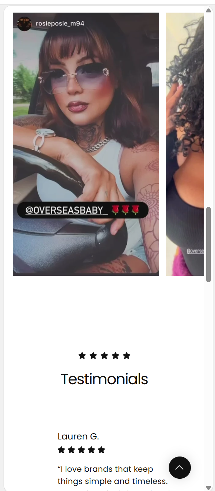
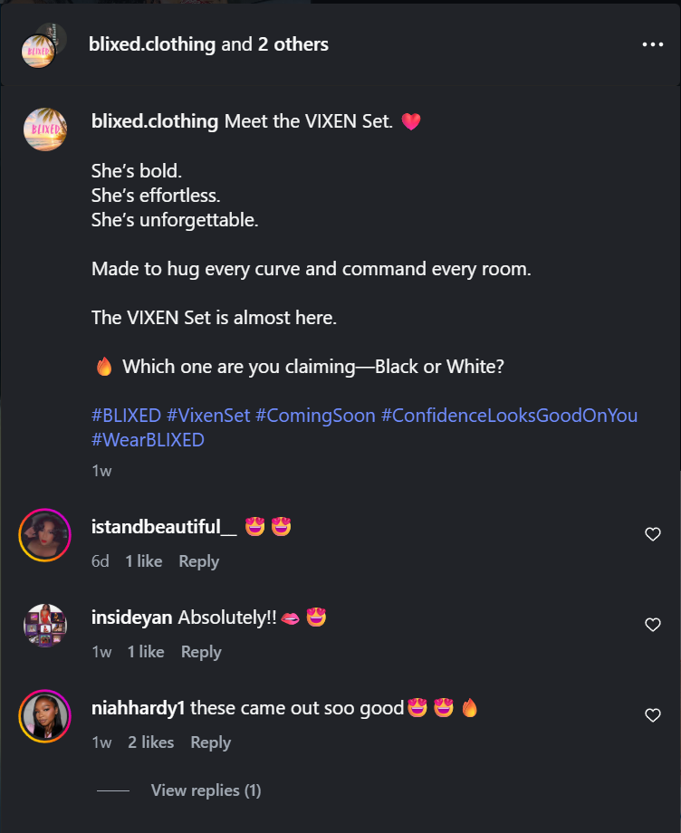
04
Other Screens
Additional Shopify screens and page states that round out the store proof.
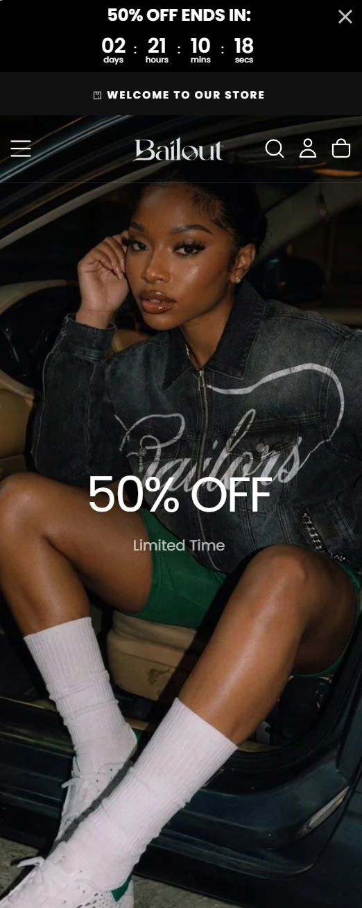
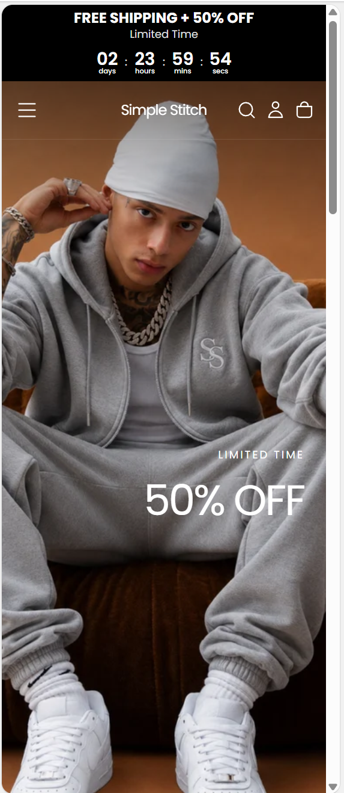
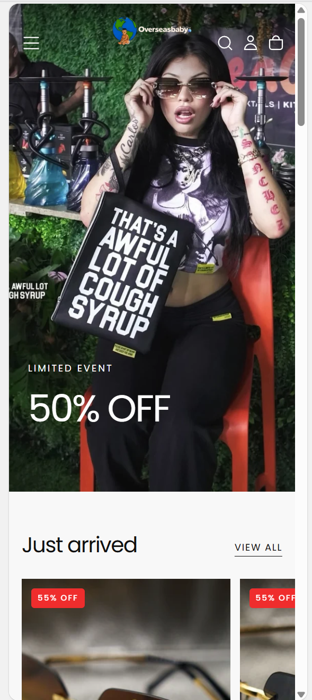